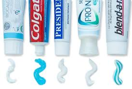

Выбор зубной пасты
Учитывая появление всё более сложных по составу и механизму действия зубных паст, необходимо выбирать зубную пасту от конкретного состояния полости рта, её слизистых оболочек, дёсен и зубов. Направленность действия зубных паст определяется их составом. В первую очередь, активными компонентами, которые и определяют лечебно-профилактическое воздействие паст на ткани полости рта.
На сегодняшний день специалисты выделяют следующие группы лекарственных препаратов, используемые по направленности их воздействия:
- Противокариесные зубные пасты
Это фторсодержащие зубные пасты, которые оказывают минерализующее и противомикробное действие, за счёт подавления обменных процессов бактерий в полости рта. Для профилактики возникновения зубного налёта и зубного камня используются такие вещества как пирофосфаты.
- Противовоспалительные зубные пасты
Это фторсодержащие зубные пасты, которые оказывают минерализующее и противомикробное действие, за счёт подавления обменных процессов бактерий в полости рта. Для профилактики возникновения зубного налёта и зубного камня используются такие вещества как пирофосфаты. В их состав входят антисептики – хлоргексидин и триклозан, обладающие широким противомикробным действием на грамположительные и грамотрицательные бактерии. Это приводит к уменьшению инфекции в полости рта и устранению неприятного запаха. Такие пасты содержат ростительные добавки, которые уничтожают неспецифическую микрофлору в зубном налёте.
- Противочувствительные зубные пастыПовышенная чувствительность зубов к внешним раздражителям – наиболее актуальная тема в стоматологи. Для борьбы с этой проблемой разработаны несколько видов зубных паст. Зубные пасты, содержащие гидроксиапатит и трикальций фосфат. Эти компоненты закупоривают оголённые участки эмали, восстанавливая её структуру, что и приводит к уменьшению повышенной чувствительности эмали. Зубные пасты, содержащие соли калия. Механизм действий этих паст направлен на блокирование передачи болевых импульсов. Такой ионный механизм и обеспечивает прекращение процессов передачи боли.
- Отбеливающие зубные пастыЭто фторсодержащие зубные пасты, которые оказывают минерализующее и противомикробное действие, за счёт подавления обменных процессов баДля осветления зубов используют отбеливающие пасты, которые удаляют с поверхности зубов пигментный налёт и мягкие зубные отложения. Такие пасты можно разделить на две группы.
Пасты, содержащие абразивы (чаще всего это соединения кремния и соды бикарбоната). Если на упаковке отбеливающих паст написано, что она не содержит агрессивных абразивов, то надо помнить, эффекта может не быть вообще.
Пасты, содержащие перекись водорода, обеспечивающие устранение влияния токсинов микрофлоры на ткани зубов путём связывания продуктов жизнедеятельности бактерий свободными радикалами кислорода. Действие пасты направлено на ликвидацию причины потемнения. Для поддержания белизны зубов такой подход более эффективен, нежели постоянная борьба с потемнением как следствием.
Ежедневное применение отбеливающих зубных паст в течении месяца (и не более) оказывает лечебно-профилактическое действие на твёрдые и мягкие ткани полости рта, освежает полость рта, способствует осветлению зубов. - Детские зубные пастыОсновная цель детских зубных паст – защита от кариеса, так как в период роста зубов идёт процесс созревания эмали, и зубы более подвержены поражению. В детские зубные пасты вводится один или два фторсодержащих ингредиента. Также, как минеральная поддержка, добавляются соединения кальция. Процентное содержание этих компонентов ниже, чем в пастах для взрослых, так как дети больше склоны к ее заглатыванию.
Говоря о зубных пастах, следует помнить, что нельзя длительное время пользоваться одной и той же пастой. Так как все лечебные и профилактические её свойства будут снижаться. Так же необходимо понимать, такие симптомы как повышенная чувствительность зубов, кровоточивость дёсен, наличие зубных камней свидетельствуют о возможной болезни, которую необходимо лечить с врачом-стоматологом.
В выборе зубной пасте вам всегда поможет ваш личный врач-стоматолог.
Рекомендуемые записи:
Выбор зубной щеткиЧитать Кариес зубовЧитать Повышенная чувствительность зубовЧитатьРекомендуемое видео:
Косметическая стоматология